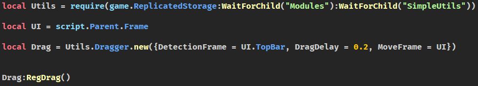
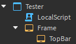
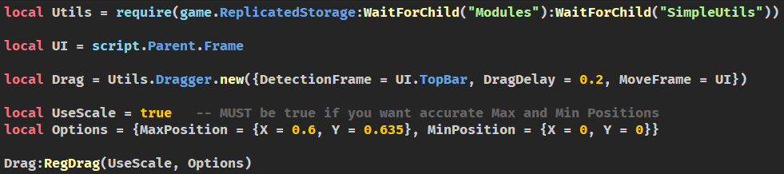
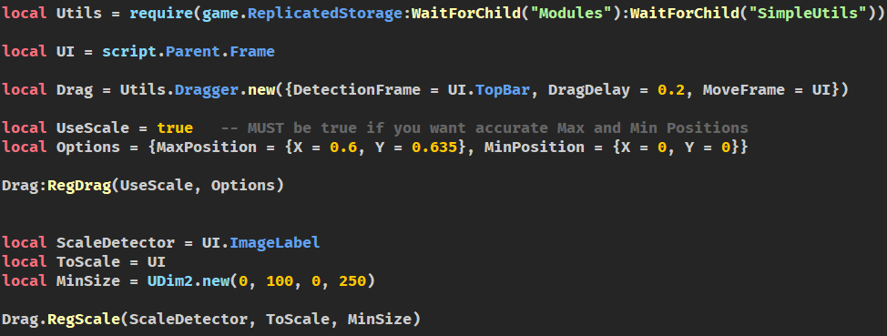
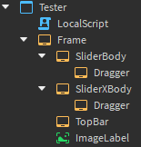

This module aims to house a lot of helpful functions.
You can download the module here.
Module Version: Version not loaded?
Requiring the module
local Utils = require(YourPathHere) -- You can require the entire module
local Invert = require(Utils.Invert) -- or you can require the functions alone.
Base Functions
.ConvertTime(Seconds)
This function allows you to put seconds into minutes:seconds (00:00 format).
Key
Type
Required
Default
Seconds
number
true
nil
local Utils = require(YourPathHere)
local Seconds = 85
print(Utils.ConvertTime(Seconds)) -> "01:25"
Dragger
This module contains several functions to make UI dragging easier, also allows for making Sliders.
new(Settings: {})
Key
Type
Required
Default
Settings
Key
Type
Required
Default
DetectionFrame
BasePlayerGui
true
nil
DragDelay
number
false
0
MoveFrame
BasePlayerGui
true
nil
true
nil
RegDrag()
Example Video of how it'll look as well as example code and setup.


It also allows to limit where the UI can go.
Example:

RegScale(Frame, ScaleFrame, MinScale)
Key
Type
Required
Default
Frame
BasePlayerGui
true
nil
ScaleFrame
BasePlayerGui
true
nil
MinScale
UDim2
true
nil
This function allows you to scale the UI to its Minimum size, or as big as you want. Below are images and video examples.

LockX() / LockY()
This functions will allow the UI to move only in specified directions (X/Y) depending which is locked.
LockX/Y should be placed BEFORE RegDrag function.
Sliders
Sliders require either LockX or LockY to be enabled. It is made from RegDrag function, where you add additional options:
Key
Type
Required
Default
Slider
Key
Type
Required
Default/Description
1
boolean
false
Default: false Description: Wether or not to make it a slider.
2
BasePlayerGui
true
Default: nil Description: Parent instance of the dragger.
false
nil
Example Code and video:

Gates
This function includes several logic gates you may use as well as :GetTruthTable();
AND | OR | XOR | NAND | NOR | XNOR
local Utils = require(YourPathHere)
local TruthTable = Util.Gates:GetTruthTable()
print(TruthTable) -> All inputs, and outputs for the gates.
print(Utils.Gates.OR(true, false)) -> true
.GetDescendantsOf.
This function has two sub functions: .Class(Ancestor, Class) and .Name(Ancestor, Name).
Key
Type
Required
Default
Ancestor
Instance
true
nil
Class
string
true
nil
Name
string
true
nil
local Utils = require(YourPathHere)
local Sounds = Utils.GetDescendantsOf.Class(workspace, "Sound")
local Instances = Utils.GetDescendantsOf.Name(workspace, "Border")
print(Sounds, Instances) -> {Instance}, {Instance}
.GetPath(Base)
This function returns the entire path leading up to that instance as a string.
Key
Type
Required
Default
Base
Instance
true
nil
local Utils = require(YourPathHere)
local Part = game.Workspace.Part
print(Utils.GetPath(Part)) -> "game.Workspace.Part"
.Invert(Num)
This function inverts any number, 0 will always return 0.
This function will return a number in more readable way.
Key
Type
Required
Default
ToTransform
number | string-type number
true
nil
local Utils = require(YourPathHere)
print(Utils.Transform(123456789), Utils.Transform("54678")) -> "123,456,789", "54,678"
.Signal. ...
This set of functions allows you to create a custom RBXScriptSignal object.
Its best used within other modules for events.
The module has 2 main sub functions, and all the RBXScriptSignal functions (:Connect, :Once, :Wait, . . .).
.new() -> Creates a new RBXScriptSignal.
:fire(Anything) -> Fires all the functions connected to the event.
local Utils = require(YourPathHere)
local CustomSignal = Utils.Signal.new()
CustomSignal:Connect(function(...)
local Received = {...}
print(Received) -> {...any}
end)
CustomSignal:fire("Any amount of arguments here.", true, game.Workspace.Part)